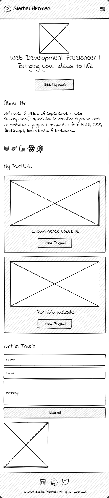
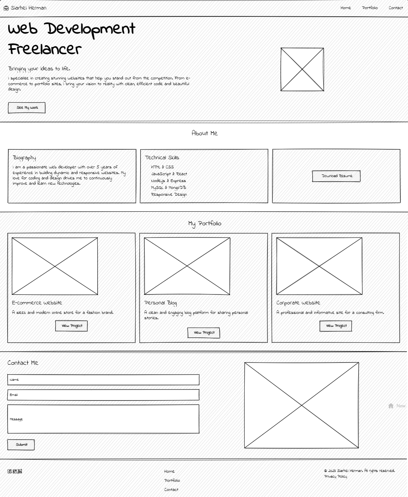

Site Name
Name: CodeCraft Freelancer
Reason: This name emphasizes creativity and technical skills in web development. It also appeals to a tech-savvy audience while showcasing expertise.
Optional Domain: codecraftfreelancer.com
Site Purpose
The website provides a professional platform for showcasing web development services, portfolio projects, and contact options. It is designed to attract clients seeking a freelance web developer for modern, responsive websites.
Scenarios
- Scenario 1: How can I hire this freelancer for a project?
- Scenario 2: What past projects has this freelancer completed?
Color Schema
- Primary Color: #555 (Dark Gray) - Used for headings and buttons to create a modern and professional look.
- Secondary Color: #f9f9f9 (Light Gray) - Used for background to ensure readability and visual balance.
Typography
- Font 1: Roboto - Used for headings to provide a clean and modern appearance.
- Font 2: Open Sans - Used for body text for easy readability.
Wireframe
Mobile View:
Desktop View:
